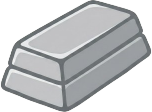
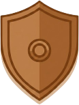
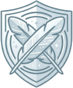
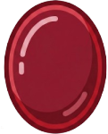
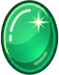
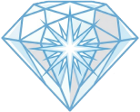
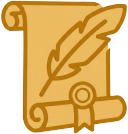

● 黒
0
盤3+取0
○ 白
0
盤3+取0
🔧 開発者モード実行中
RSG-v58
| レベル | 勝 | 負 | 分 | 勝率 |
|---|
盤上の自分の石の数と、囲んで取った石の数の合計（ポイント）が相手より多ければ勝利です。
星型の形をした盤面で、マス目は全部で37個あります。中央の紫色のマスがコアポイント（CP）と呼ばれる特別なマスです。
石は必ず相手の石を挟める場所にしか置けません。挟める方向は6方向です。相手の石を挟むと、その石をひっくり返して自分の色にできます。
リバーシにはない特別なルールです。自分の石で相手の石を完全に囲むと、その石を盤面から取り除けます。取った石の数がポイントに加算されます。取り除かれたマスには再び石を置けます。
ただし、すでに前から囲まれていた相手の石は、その囲みと関係のない別の手では取れません。あくまで自分のその手によって新しく完成した囲みだけが、相手の石を取る対象になります。
盤面中央の紫色のマスです。CPはどちらの色にもなれる特別なマスです。CPを使って石を挟む時は、石を置いた直後に「黒」か「白」をコールする必要があります。コールした色によって、ひっくり返る結果が変わります。
以下のいずれかでゲーム終了です。
① 全37マスが石で埋まった時
② 両者とも置く場所がなくなった時
③ コウ（同じ局面の繰り返し）が続きゲームが進行できなくなった時
盤上の自分の石の数 ＋ 囲んで取った石の数 ＝ 合計ポイント
合計ポイントが多い方が勝利です。
Lv.5 以上の対戦では、先手後手の有利不利を解消するため、自動的に「リバースマッチ」になります。白黒を入れ替えて 2 局対戦し、合計得点で勝敗を決めます。
複数セット行う場合は、セット間も色が交互になります（1 セット目：黒→白、2 セット目：白→黒、…）。
もっと詳しいルール（CP参加条件、コウの詳細、昇格試験など）
カレンダーの日付をタップしてゲームを開始します。
CPUに勝利するとその日がクリアになり、カレンダーに緑のマークが付きます。
過去の日付もチャレンジできるので、やり残した日があっても大丈夫！さかのぼって挑戦しましょう。
1ヶ月すべてクリアするとトロフィーを獲得できます。🏆
CPUレベルなどの設定は、日付を選んだ後のゲーム設定画面で変更できます。
| 日 | 月 | 火 | 水 | 木 | 金 | 土 |
|---|
ReverStarGoは、星型の盤面で2人が対戦するボードゲームです。リバーシの「挟んでひっくり返す」と囲碁の「囲んで取る」を組み合わせた、全く新しい戦略ゲームです。
① 石の置き方
必ず相手の石を挟める場所にしか置くことができません。置く場所がない場合はパスとなります。
② ひっくり返す
挟んだ相手の石はすべてひっくり返し、自分の石にします。
③ 囲んで取る
自分の石で相手の石を完全に囲むと、その石を取り、取った数が自分のポイントになります。取られたマスには再び石を置くことができます。
ただし、囲碁とは異なり、盤面の端（壁）を使って囲んでも石を取ることはできません。必ず自分の石だけで完全に囲む必要があります。
④ 既存の囲みは保護される
すでに前から囲まれていた相手の石は、その囲みと関係のない別の手では取ることができません。あくまで「自分のその手によって新しく完成した囲み」だけが、相手の石を取る対象になります。
CPは盤面中央にある特別なマスです。
① コールが必要
CPを使って石を挟む手を打つときは、石を置いた直後、石をひっくり返す前に「黒」または「白」とコールしなければなりません。
② コールした色として扱う
コールした色の石がCPにあると仮定してゲームを進めます。
③ CPを囲んだ場合
CPも通常の石と同様に、完全に囲むとポイントになります。CPのみを囲んだ場合もポイントになります。
以下のいずれかの条件でゲーム終了となります。
盤上に残っている自分の石の数と囲んで取った石の数を合計し、多い方が勝利です。
合計ポイントが同じ場合は、囲んで取った石の数が多い方を勝ちとします。
合計ポイントも取った石の数も同じ場合は引き分けとします。
同じ局面を繰り返すことを防ぐためのルールです。
① 基本ルール
1手前とまったく同じ盤面に戻してしまう手は打てません。
そして、一度現れた局面に戻る手も打てません。
② 例外
その手以外に置ける場所が全くない場合のみ、同じ盤面に戻る手でも打つことができます。
③ 例外後のルール
例外が適用された直後は、相手も同じ盤面を繰り返す手を打つことはできません。
④ ゲーム終了
両者とも同じ盤面を繰り返す手しか打てない状態が続く場合、ゲーム終了とし、その時点での合計ポイントで勝敗を決します。
⑤ 盤面の表示
● 黄色ドット … 置ける場所の目印（どんな背景色の上でも表示）
● オレンジ背景＋白枠 … CPコールの片方の色がコウで制限。置けますが選べる色は1つです。
● 赤背景＋白枠 … コウでブロックされた手。通常は置けません。
● 赤背景＋白枠＋黄色ドット … 赤しか選択肢がない例外時。置くことができます。
先手後手の有利不利を解消するため、Lv.5 以上の対戦では自動的に「リバースマッチ」形式で対戦します。
① 2 局 1 セット
1 局目と 2 局目で白黒を入れ替えて、同じ相手と 2 回対戦します。
② 合計得点で勝敗決定
2 局の合計得点が多い方が勝者です。1 局目で負けても、2 局目で大きく勝てば逆転できます。
③ セット間も先手交代
複数セット行う場合、セット間でも色が自然に交互になります。
・1 セット目：黒 → 白
・2 セット目：白 → 黒
・3 セット目：黒 → 白
（通常対戦でも、色を手動で変更しない限りこのパターンが続きます）
④ 適用範囲
Lv.5 以上のすべての対戦（通常対戦・ランクアップマッチ）
※ 2 人対戦モード・チュートリアルでは適用されません
⚔ 次のレベルのCPUを解放するための特別な連戦です。デイリーチャレンジとは別に挑戦できます。
① 発生タイミング
特定のランクに到達すると、次の昇格ランクへの挑戦権が自動的に発生します。
※ RM ＝ リバースマッチ
② 基本ルール
③ 不合格でも大丈夫
不合格になっても何度でも再挑戦できます。納得できるまで挑戦してください。
囲んで相手の石を取った直後、相手がすぐ同じ場所に置き返すと、同じ盤面が永遠に繰り返されてしまいます。
これを防ぐため、1手前とまったく同じ盤面に戻してしまう手は打てません。
他の場所に一手置いてからなら、再び石を置くことができます。
💡 ヒント表示のしくみ：
● 黄色ドット = 置ける場所（背景色問わず）
● オレンジ背景＋白枠 = CPコール制限あり（置ける）
● 赤背景＋白枠 = コウで禁止（黄色ドットがあれば例外で置ける）
次は⚫黒の番です。
画面をタップして続ける
C.P.をどちらにコールしますか？
置ける場所がありません
⚠ ゲームを中断すると
負けになります。
よろしいですか？
🔧 開発者メニュー
ランクアップ！
ランクアップマッチとは？
次のランク（および新しいレベル）を解放するための特別な連戦です。デイリーチャレンジとは別に挑戦できます。
昇格戦の一覧
 ウッド →
ウッド →  ストーン：3番勝負（先に2勝）／Lv.2 解放
ストーン：3番勝負（先に2勝）／Lv.2 解放

スチール →
ブロンズ：5番勝負（先に3勝）／Lv.3 解放ゴールド →

プラチナ：7番勝負（先に4勝）／Lv.4 解放
ガーネット →
エメラルド →
ダイヤモンド：RM 5番勝負（先に3勝）／MAX 解放
マスター → レジェンド：RM 7番勝負（先に4勝）レジェンド → グランドマスター：RM 15番勝負（先に8勝）／FINAL 解放
デミゴッド →  ゴッド：RM 11番勝負（先に6勝）
ゴッド：RM 11番勝負（先に6勝）
 ゴッド →
ゴッド →  ゼウス：RM 21番勝負（先に11勝）
ゼウス：RM 21番勝負（先に11勝）
※ RM ＝ リバースマッチ
基本ルール
・必ず連続で全試合を戦い抜く必要があります
・途中で他の画面に移動すると不合格になります
・白黒は1試合ごとに自動で交代します
・プラチナからレジェンドまでの昇格試験は、通算20勝でも昇格できます（ダイヤモンド・レジェンドは RM 通算）
不合格でも何度でも再挑戦できますので、納得できるまで挑戦してください！
※ あとでゲーム設定画面からも開始できます